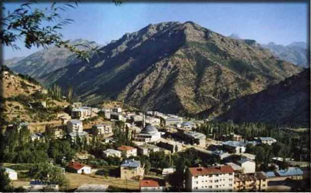
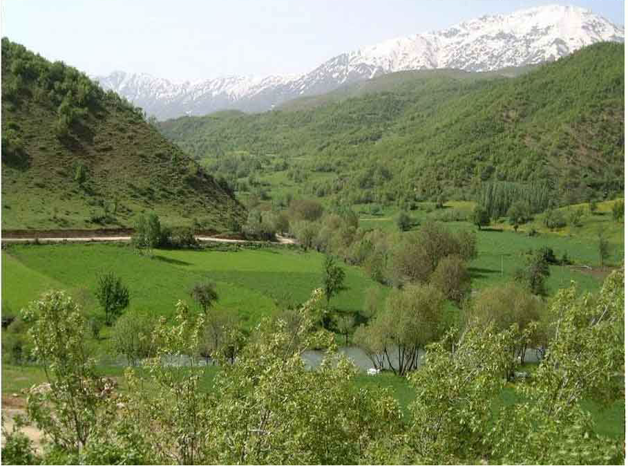

İHANETİN YERİ ŞEMDİNLİ
Asker ve Polisin Sabır Taşı; Efkar Tepesi

Burası Şemdinli, Hakkari’nin ilçesi. Tek girişi var Yüksekova’dan gelen, başka yolu yok. Çıkmaz bir sokak; soldaki toprak yolu izlerseniz İran’a, sağdan Şemdinli Çayı’nı takip ederseniz Barzani’nin Irak’ına ulaşırsınız. Tam karşınızdaki Gomane Tepe, sağında uzanan sırtlar ise konumuz olan Efkar Tepesi.
PKKTı teröristlerin ‘84’te ilk baskını gerçekleştirdikleri ilçemizdir burası. Abdullah Öcalan’ın:4 “Eruh ve Şemdinli ilçelerine baskın düzenleyen birliklerimiz Kuzey Irak’ta KDP’nin kontrolündeki bölgede hazırlanmıştır. Bu kamp Lolan kampıdır. Bu dönemde biz KÜP lideri Barzani ile irtibat halindeydik.”, sözleriyle anlattığı Şemdinli.
Bu baskın için siz; “İşte terör bu, çözülmesi güç bir kördüğüm” diyorsanız eğer, dört şeye dikkat etmeniz gerekiyor; yıllar, yerler, olaylar ve kişiler; o yılların kördüğümünü teşkil eden dört ipucu işte bu: Yıl 1984, yer Lolan, olay Şemdinli baskını, kişiler Özal, Öcalan ve Barzani.
Yıl 1984; Öcalan ‘79’da Suriye’ye kaçmış, terörist toplama ve eğitim kampları kurmuş, 12 Eylül harekâtı olmuş, Özal Başbakan seçilmiş ve Barzani PKK ile anlaşmış ama bizim haberimiz yok; kim kime ve neye hizmet etmiş, bilmiyoruz. Bir müdahalemiz yok; Suriye rahat, Öcalan rahat, Barzani rahat, Özal rahat, teröristler rahat ama şehit olan biz, acı çeken biz ve biz rahat değiliz.
Kişiler; Özal, Başbakanımız, bizim başbakan. Bir yanım Kürt diyen, PKK’yı üç beş çapulcu olarak niteleyip milli güçleri seferber etmeyen Özal. Barzani, Kuzey Irak Kürt Yönetimi lideri, bugünün Barzani’si, PKK ile anlaşan ve ona Irak’ta yer ve kamp tahsis eden Barzani, kırmızı pasaport verdiğimiz Barzani. Öcalan ise bizim Öcalan, katil robotların başı, o yıllarda Suriye’de idi, şimdi ise İmralı’da PKK’yı yönetiyor.
Yer Lolan; Şemdinli güneyi, Hakurke’nin yanı başı, sınırlarımıza uzaklığı beş saatlik bir yaya yürüyüş mesafesi. Çayı ile meşhur, ünlü Lolan Çayı, köprüsü ile meşhur, Lolan köprüsü; dağlık, yeşillik ve sulak bir arazi. Ülkemize en yakın yolu Hakurke, Ari ve Gasto’dan geçiyor. Sola yani batıya uzantısı Gelyaraş ve Kanyaraş; hayat vadisini, Erbil ve Diana yolunu kontrol altına alıyor, tıpkı bugünkü gibi. Burada eğitim yapmış teröristler, burada yetiştirilmiş ve gelip Şemdinli baskınını yapmışlar ama haberimiz olmamış.
Lolan önemli bir arazi parçası teröristler için. Aradan yıllar geçecek, Lolan, Hakurk ve Durjan ile birleşecek, Barzani himayesinde ana terörist kampı olacak, ülkemizdeki cinayetleri buradan yönetecek ve yönlendirecek ama kim nereden bilecek ki bunu! 1992’de para, silah, yiyecek ve giyecek verdiğimiz Barzani’nin PKK ile savaşmak yerine daha 1984’te PKK ile anlaşmış olduğunu kim nerden bilecek! Daha bugün Barzani açıklama yapmadı mı; “PKK terör örgütü değildir, Türkiye’nin siyasi sorunudur, PKK ile savaşmayız”, demedi mi? Bizimkiler ise hâlâ diyalog arayışında Barzani ile, Talabani ile. Ne için? PKK ile mücadele edilecekmiş! Bizi yönetenler, unutmayınız ki, yönetenlerin de sorumluluğu vardır Türk milletine karşı. Siz hâlâ Barzani demek; PKK demektir göremediniz ha! Diyalogla çözeceksiniz bu PKK’yı ha! Hem de Barzani ile! Siz ihanet nedir, bilir misiniz? Merak etmeyiniz anlatacağım size ihanet nedir, diye. Bu kitap onun için yazıldı zaten!
1984 Şemdinli baskını bu, basit bir olay değil, kolay değil, cesaret ister. Bu cesareti nereden buldular? Bizden buldular bizden; mülayim, sabırlı, etliye sütlüye karışmayan bizden. Öcalan yıllar boyu Suriye’de yaşarken karışanı mı oldu sanki? ‘91 Körfez harekâtıyla Saddam ile anlaşıp silahlanırken, Irak kuzeyindeki tüm yerleşim birimlerini birer terörist kampı haline getirirken karışanı görüşeni oldu mu hiç? 2003 Körfez harekâtında açık açık Kandil’den tüm dünyaya mesaj verirken, üzerlerinde Amerikan silahları ele geçerken, Barzani, Talabani ve Amerika’nın desteğini alırken, tüm bunlardan cesaret alıp da Türk milletine kafa tutarken karışanı oldu mu hiç? Şemdinli baskını bizim ünlü tarihin tozlu sayfalarına kaldırıldı, unuttuk, neredeyse bu baskını yapanlardan biri olan eski terörist Seferi Yılmaz’ı bile ayıp olmasın diye Gazi Paşa’nın yüce meclisine taşıyacaktık biz, hem de omuzlarımızda.
Unutkan olduk inanın unutkan; tarihimizi, şehitlerimizi, PKK’nın köylerimizi yakıp yıktığı günleri, ona destek verenleri hep unuttuk. Hâlâ etrafımıza gülücükler dağıtıp dostluk mesajları veriyoruz, yıllarca PKK’yı besleyip büyüten Suriye’ye futbol takımı gönderip dostluk maçları bile yapıyoruz. Ne oluyor bize? Hiç soran çıkmayacak mı içimizden; madem böyle yapacaktınız, neden bunları bize yaşattınız, diye?
Irak kuzeyinde ne olup bittiğinden yıllarca haberimiz olmadı bizim, inanın olmadı. Bu istihbarat örgütleri ne yapar, onları da anlamak güç. Hatırlıyorum da bir MİT Raporu yayınlanmıştı, yayınlanmıştı da, kimin eli kimin cebinde onları anlatıyordu bize bu rapor. Peki, milli varlığımızla düşman olanları kim takip edecek; hangi arazide, kimlerle kimin ne yaptığını kim takip edecek, ellerindeki silahları nasıl ve nereden temin ettiklerini kim takip edecek? Biz o yıllarda kimseyi göremedik.
Hâl böyle olunca, gece yansı aniden uyandırdılar bizi, dediler ki; Şemdinli ilçemiz teröristlerce basılmış! Kim basmış? Kimi diyor eşkıya, kimi diyor hain, kimi diyor haydut, kimin ilçeye baskın yaptığı yolunda dahi bir haberimiz yok! Nereden geldiklerini bile bilmiyoruz. İnsan tarihten ders alır, insan önüne gelen raporları, ifadeleri bir okur, hiçbir şey bilmeseniz dahi Öcalan’ın ifadesi alır, onu okur da geçmişte ne olmuş, nasıl olmuş öğrenir, öğrenir de gelecek için bir tedbir alırsınız. Ama bunu yapacak adam nerede! Hani arşivleri örgütün? Yok. Hani para kasası örgütün? Yok. Hani eylem planları, raporları, eleman sicilleri, yurt dışı bağlantılarını gösterir deliller? Öcalan’ın ifadesini okusanız inanın gülersiniz. Bildiğimiz şeylerin hepsi tek tek yazılmış; örgütün kuruluş felsefesi, stratejisi, taktikleri, eylemleri, kampları, hepsini bir güzel yazmışlar. Bunlar bildiklerimiz, peki ya bilmediklerimiz? Onlardan eser yok, nasıl bir ifade bu? Kaçakçılık organizasyonu hâlâ bir muamma; iç ve dış bağlantılar, kuryeler, kasalar, aracılar, onlar yok!
Bu konular açılınca yüreğim yanıyor, kendimi safmışım gibi hissediyor ve bu hisse kapılınca da kendime kızıyorum. Kızdıkça da yazayım istiyorum, o zaman da asıl konudan uzaklaşıyorum, anlatmak istediklerim biraz birbirine karışıyor. Karışınca da kitabın ana fikri kayboluyor, ben de satırlar arasında kaybolup gidiyorum. Sakinleşmeliyim. Sakin sakin size anlatmalıyım.
Dönelim şu ünlü Şemdinli’ye. Nasıl geldiler, nereden geçtiler, nereden döndüler? Üç yol var Lolan’dan Şemdinli’ye ulaşan; Hakurke’yi geçip Zagros’a çıkar, Mezargediği, Tanyolu ve Hazne üzerinden Şemdinli’ye ulaşırsınız: Ama bu yol riskli, yerleşim yeri çok, görülebilirsiniz.
İkinci yol; Hakurke’yi geçer, Ari’yi aşar, Hacıbey’den atlar, Gasto ve Karadağlar üzerinden Şemdinli’ye gelirsiniz. Bu da zor; uzun zaman alır, görülme tehlikesi var.
Üçüncü yol; Lolan’dan Hayat vadisine çıkar, arabayla Hacıbey’e kadar gelir, Horyürek cephesinden Ortaklar’a çıkar, gece bu, kimse göremez sizi, yolu takip eder ve Şemdinli’ye sağ ve de salim varırsınız. İşte bu yolu seçtiler, geldiler Şemdinli’ye, devlete kafa tuttular ve aynı yoldan Lolan’a döndüler.
Peki, biz ne yaptık? Lolan’ı teröristlere cehennem yapacağımız yerde, subaylarımızı gerekli tedbirleri almadıkları iddiasıyla emekli ettik. Tıpkı ‘93 Bingöl katliamında emekli ettiklerimiz gibi. Ama kimsenin aklına gelmedi sormak; bu istihbarat örgütlerimiz ne yapar, nasıl olur da bilemezler teröristi, yerini, yurdunu, sayı ve silahlarını? 92’de de sormadık bu istihbaratın başındakilere, demedik ki; nasıl olur da Şemdinli üç koldan kuşatılır binlerce terörist tarafından ama sizin haberiniz olmaz! Sormadık bu soruları ilgili ve yetkililere, cevap da alamadık, bir gözümüz bağlı, diğer gözümüz gelecekten umutlu Şemdinli’ye geldik. Bakın ve görün nasıl mücadele ettik biz terörle, teröristle ve de yandaşlarıyla, bir şey bilmeden, hep yaşayarak, görerek ve şehit olarak.
Konumuz elbet Efkar Tepesi. Şemdinli’nin Efkar Tepesi. Teröristin geçemediği, barınamadığı belki de tek arazi parçasıdır burası. Bir başka anlamı var Efkar Tepesi’nin; dağ değil, tepe değil sabır taşı gibi bir şey, Öfkenin kurşuna dönüşmesi gibi bir şey, atılan her kurşundan dayanma gücü almak gibi bir şey. Şemdinli küçük bir ilçe. Yüksekova’dan çıkar, iki saat kadar bir yol alırsınız; arada sırada rastlayacağınız küçük küçük köylerin dışında dağlar ve taşlar sizi gözler, siz de onları seyredersiniz karmaşık düşüncelere dalarak. Ne zaman ki Şapatan Gediği’ne ulaşırsınız, hemen aşağınızda yemyeşil bir çukurluk, ova değil, yayla değil, küçük bir çukurluk etrafı dağlarla çevrili, sizi karşılar. Burası Şemdinli’dir. İlk bakışta üç şey görürsünüz, üç şey sizin dikkatinizi çeker; dağlar, gökyüzü ve küçücük bir ilçe.
İlçe bildiğiniz, alıştığınız doğumuzun bir ilçesidir; birkaç bin nüfuslu, tek ana yola açılan dar toprak yollar, birkaç resmi bina ve sokaklarında dolaşan insanlar. Daha önce doğuya gittiyseniz bu manzara size yabancı değildir, hafif bir tebessümle eski yıllarınız aklınıza gelir.
Gökyüzü de yabancı değildir size, ister doğu olsun ister batı, gökyüzü bildiğiniz gökyüzüdür, kimi zaman bulutlu, kimi zaman güneşli, bazen yağmurlu ya da karlı. Nefes aldığınız havadır bu, yıldızları seyrettiğiniz, Allah’a dua ettiğiniz gökyüzü. Şemdinli’de günleriniz ise nefes almaktan ve de yıldızları seyretmekten ziyade Allah’a dua etmekle geçer. Bu nedenle önemlidir gökyüzü; size güç verir.
Gelelim dağlara. Şemdinli çukuruna girdiğinizde tüm evreni kucaklayan gökyüzü size dar gelir, küçük gelir, bazen şaşırırsınız, bu kadar da küçük gökyüzü olur mu, diyerek. Öyledir, küçüktür çünkü dağlar size izin vermez bakışlarınızı yukarı kaldırmaya, kaldırıp da gökyüzüne bakmaya; dört bir yanı dağlarla çevrilidir bizim küçük Şemdinli ilçemizin.
Şemdinli çukuruna girin, isterseniz jandarma taburuna gidin, sizi misafir ederler, çay ikram ederler. Ana binanın hemen yanı başında ufak tefek bir bahçe vardır, dinlenmek için. İster oraya oturun, isterseniz ana binanın yukarısında, ‘84’te teröristlerin roket attığı derme çatma, adına da gazino denilen bir çay ocağı vardır, oraya oturun. Biraz tedirgin olacaksınız ama olsun, her an üstünüzde bir roket patlayacakmış gibi bir düşünceye kapılacaksınız ama olsun, ‘84’ün izleri hâlâ silinmemiştir hafızalardan ama olsun, bir çay için ve gökyüzüne bir bakın. Dört dağ ya da tepenin içine sıkışmış hissedeceksiniz kendinizi. Başta canınız sıkılacak, göğsünüz daralır gibi olacak ama aldırmayın, zamanla alışırsınız bu dağlara çünkü bu dağlar sizindir.
Sola doğru bakarsanız Gomane Tepe’yi görürsünüz, yukarıdaki resimde tam karşınızda yer alan tepe. Gomane, ta üçlü sınıra kadar doğuya doğru uzanır. Üçlü sınır size tanıdıktır, birlikte çok yolculuk yaptık biz sizinle; İran, Irak ve Türkiye sınırlarının birleştiği yer. Dalamper ya da Zagros dediğimiz dağlardan ufala ufala ta Şemdinli’ye kadar gelir. Gelir ama kötülüğü şu, gökyüzünü kapatır. Göğü göremezsiniz dolayısıyla dua edemezsiniz, etseniz de dağlar sizi dinleyemez, size çare olamaz. Taktik açıdan önemlidir; Gomane’ye çıkan taş atsa, Şemdinli’de sizin başınıza düşer. Ne zorluk çekti evlatlarınız bu tepeyi kontrol altına alabilmek için. Tepe deyip geçmeyin, çıkmak zor, saatlerce tırmanış demektir. Tepe deyip geçmeyin, onca zorluğa rağmen çıktığınızda geceleyin üşümeniz demektir, soğuktur. Gece deyip de geçmeyin, çünkü oralarda geceler bitmez, çok uzundur çok. Saatler geçmez, dakikalar geçmez ve gece hiç bitmez gibi gelir insana. Bu bir gece de değildir, çok gecedir çok, orada görev yapmış evlatlarınızı bunu iyi bilir. Siz her gece terörist beklersiniz, gelsin de hesap sorayım, diyerek. Terörist bu, hemen gelmez ki! Bıkarsınız, yorulursunuz, gelirse gelsin, deyip ölüme bile aldırmazsınız. İşte hainler bu anınızı ve bu duygularınızı iyi bilir, sizin böylesine düşündüğünüz bir anda gelir, sıla hasretiyle gözlerinizin dolduğu bir anda gelir, sizi şehit eder ve gider. Gomane gibi çok dağ, çok tepe vardır Şemdinli’de saymakla bitmez ama Efkar Tepesi bir başkadır!
Hemen arkanızda Beyaztaş Tepe vardır, İran’ı Şemdinli’ye bağlar. Genelde teröristler buraya çıkmaz çünkü askere çok yakındır, korkarlar. Ya sağından geçer Şapatan üzerinden Altınsu köyünün ihtiyar muhtarına konuk olurlar, ya da solundan geçip Hazne’de bir yandan soğuk su içerken öte yandan yola mayın döşerler, siz geçerken şehit olasınız, diye. Ama bu Beyaztaş da o heybetiyle Gomane gibi gökyüzünün yarısını kapatır, dolayısıyla dualarınızın yarısı gökyüzüne gider yarısı ise Beyaztaş’a. Beyaztaş sizi dinlemez; Allah size akıl vermiş, işte dağ işte taş, işte asker, işte terörist der, tedbirinizi alın, diye size nasihat eder, başka bir şey de elinden gelmez. Gökyüzüne gelince; “Güzel bir yurt verdim size, iyi insanları başınıza getirin, yurdunuzu iyi yönetin, neden biz bunları yaşıyoruz, diye de sormayın, her insan layık olduğu şekilde yönetilir ve yaşar, aklınız var onu kullanın”, der, daha ne desin ki! Beyaztaş da bir başkadır ama asıl Efkar Tepesi’dir konumuz olan.
Tabur gazinosundan gene karşıya ve de uzaklara baktığınızda Beyaz dağı görürsünüz. Teröristler oralardan geçer; sağa giderse Bembo’ya, sola giderse Ortaklar’a, batıya giderse Akpınar dağı üzerinden Basyan’a geçer. Her hareketinin bir amacı vardır; sağdan gidişi demek; Durak’a taciz, Bembo’da pusu, Beyyurdu’na taciz demektir. Sola dönerse, Ortaklara taciz, Silo yaylasında pusu demektir. Batıya dönerse, Konur vadisinde mayın, Aktütün’e taciz ve oradan da Basyan’a yani Irak’a kaçmak, demektir, tabi tekrar geri gelmek üzere. Beyazdağ da bir başkadır ama Efkar Tepesi daha bir başkadır, Efkar Tepesi belki de Şemdinli’ye en yakın olan dağdır, hemen yanı başında. Merak etmeyin, buradan terörist geçemez ve de burada terörist barınamaz çünkü kimin ne zaman bu tepeye ateş edeceğini kimse bilemez. Bu tepe bizimdir, eskiden de bizimdi şimdi de bizimdir. Şemdinli’ye tayin olan her asker, her polis, her memur Efkar Tepesini iyi tanır, iyi bilir. Burası bizler için sabır taşıdır ama her ne hikmetse hiç çatlamaz onca kurşuna rağmen. Bizim taburun hemen karşısındadır; nöbetçiler geceyi bu tepeye bakarak geçirir. Genelde gece teröristlerin, gündüz bizim olduğu için, nöbet tutanlar yerinden kımıldamaz, Efkar tepesini seyrederek nöbeti bitireceğini düşünür ama geceler çok uzundur, bitmek bilmez. Şemdinli’de bazen sabrın taştığı anlar da olur, dayanamazsınız, insanoğlu bu, sabır taşı değil ki! işte o zaman Efkar tepesi tepeliğini yapar ve atılan bütün kurşunları göğsünde toplar, kimse de karışmaz bu nereden geldiği belli olmayan kurşunlara, kimse de sormaz, neden, diye. Halk da alışmıştır buna, hiç korkmaz. Sabrın taştığı anlarda önce bir makineli tüfek darbesiyle mermiler Efkar’a boşaltılır. Bunu duyan diğer silahlar; roketler, bombalar, piyade tüfekleri, bütün silahlar, hepsi anlaşmışçasına elinde avucunda ne varsa Efkar’a gönderir.
Bu; tüm efkarların dağıtıldığı bir andır, herkes keyifle ama efkarla seyreder. Bu sabıra sabır eklemek isteğinin dile geldiği bir andır, herkes efkarlanır, ya sabır çeker. Her mermi, bir dayanma gücüdür. Her mermi aslında otuz yıldır süren bu kaosa bir isyandır, isyan atılan mermilerle dile getirilir. Bu nedenle bu tepenin adı Efkar Tepesi’dir, bu adı da orada görev yapmış devletin polisi ve askeri koymuştur.
Allah’tan bu Efkar Tepesi var, yoksa Şemdinli’de teröristlerin hainliklerine dayanmak zor. Efkar Tepesi demek, bizler için Şemdinli demektir. Hâlâ devletin Şemdinli’de otorite olduğunu düşünüyorsanız, inanın bu Efkar Tepesi sayesindedir, yoksa bunca yıldır süren bu ihanete can dayanmaz, Şemdinli dayanmaz, biz dayanamayız. Sağ olasın Efkar Tepesi, yıllarca bizim kahrımızı çektin, bir ah, bile demedin onca kurşuna. Bize sabır verdin, dayanma gücü verdin. Sağ olasın Efkar Tepesi, sağ olasın...
Dost Dağlar; Çimen Dağı

Gördüğünüz çay, Çimen Dağı ile Dalamper Dağı’nın arasından Şemdinli’ye gelen çaydır. Efkar Tepesi’nin hemen önünden geçer bu çay. Sağ yukarı Dalamper, sol yukarı ise Çimen Dağı’dır, üzeri karlı olan. Yollar zorludur Şemdinli’de, anlattım size, hem de çok zorlu.5 Tek gidiş ve aynı yoldan tek geliş, başka şansınız yoktur. Çimen Dağı’nın güneyi iki ana yerleşimine, Tanyolu ve Mezargediği’ne, kuzeyi de diğer ikisine açılır yani Helena ve Kayalar’a. Önce sizinle bu yolları bir görelim, sonra bu Çimen Dağı nedir, Helena nedir, anlatayım.
Şemdinli’de doğuya yani İran sınırına gidebilmek için üç yola gelmek zorundasınız. Üç yol demek; Derecik, Şemdinli ve Çimen Dağı’na giden istikametlerin birleştiği üç yol ağzı demektir. Bu köşeyi tutarsanız, her üç istikameti de kontrolünüze alırsınız ama dağlardan değil, yollardan. Yol kontrolü demek; barikat demektir, kolay yaparsınız bunu. Ama dağların kontrolü demek; alan kontrolü demektir; zordur, sabır ister, fedakârlık ister.
Üç yola gelin, tam sola dönün Hazne’ye doğru çayı ve çay kenarına dizilmiş yeşil ağaçları takip ederek yarım saat kadar sonra iki yol ağzına geleceksiniz. Burada durun, araçtan inip çay kenarındaki gölgelikte dinlenin. Kahraman korucularımız vardır orada, sizi sıcak karşılar ve sıcak bir çay ikram ederler size. Eskiden karakolumuz varmış burada, kapatılmış, şimdi boş ve metruk bir bina vardır orada, içinizi sızlatacak olan. Üzülürsünüz, neden dersiniz, neden bayrağımız topraklarımızda dalgalanmıyor? Cevabı uzundur; kimi taktik der buna kimi strateji, ister o olsun ister bu ama hiçbir gerekçe ay yıldızın neden dalgalanmadığını açıklayamaz, açıklasa da inandırıcı olmaz.
Korucularımızla sohbet edin; anlatsınlar sizlere ne çektiklerini hem de yıllar boyu, devleti ve otoritesini nasıl beklediklerini, nasıl sağladıklarını anlatsınlar. Bir yanlarında PKK, bir yanlarında devlet, sosyal güvence yok, emeklilik yok. Ölseler de bir dert, yaşasalar da; ölünce yerlerine yakınlarından birinin korucu yapılması zor, yaşasalar ne zaman işten atılacakları belli değil, devlet kararsız bu konuda ama Öcalan kararlı, korucular silah bıraksın, diyor. Bu da terörün yarattığı bir rant, para kapısı; ağası var para isteyen, devleti var yardım isteyen. Kısacası dertleri çok, çare zor, sizin zamanınız az, en iyisi; “Allah yardımcınız olsun”, deyin tekrar yola koyulun. Hazne’den sağa dönerseniz Mezargediği’ne, sola dönerseniz Kayalar ve Helena’ya ulaşırsınız.
Kayalar’ı şimdilik saymayın, onun dünyası diğerlerinden farklı. Ona bela olan Şehidan Dağı var, Jerma var, Mağaraönü patikası var, zamanı gelince anlatacağız. Biz Çimen’e devam edelim. Çimen Dağı ise, hem Helena’ya hem de Mezargediği’ne beladır, bu dağ sizin dostunuz değilse eğer.
Bir dağ, bir insana nasıl dost olur ya da düşman, düşündünüz mü hiç? Eğer o dağı, karış karış gezdiyseniz, gece uyuyacak gündüz yürüyecek yerlerini ezberlediyseniz, nerede su içeceğinizi, nerede aşağısını gözleyeceğinizi biliyorsanız, aynı şekilde teröristlerin de o dağda neler yapabileceğini doğru olarak değerlendirme bilgisine sahipseniz, hiç korkmayın, o dağ sizin dostunuzdur. Aksi halde o dağdan korkun, kaçın, yanından bile geçmeyin çünkü o size düşmandır. Hem de çok kızgındır size, sertçe sorar; “Hem diyorsun bu dağlar bizim, hem diyorsun ayak basmadığın yer senin değildir, hem de sizin olan dağları tanımıyorsun, bu ne iş?” Bu yüzden çok kızarlar size çok. Öfkesinden korkun!
Kayalar’ı saymayın, dedim çünkü Hazne’den dönüp de bir müddet yol aldıktan sonra Kayalar yolu sola ayrılır ve sizi Çimen’den uzaklaştırır. Ama sağa dönüp de Helena’ya doğru gittiğinizde Çimen Dağı size hep eşlik eder, hem de yukarılardan, aşağıdan değil. Yol ile Çimen’le aranızda bir çay geçen Pusuya düşerseniz çayı geçip de sırtınızı Çimen’e dayayamazsınız çünkü fırsatınız olmaz. Çay’dan vazgeçip de solunuzdaki sırtlara dayanırsanız teröristlerin ateşi altında kalırsınız, en iyisi siz pusuya düşmeyin ve bunları da düşünmeyin. Bu hassasiyeti Çimen de bilir, teröristler de bilir. Ama sizin başka seçeneğiniz yoktur; bu yoldan geçeceksiniz ya pusuya düşüp mayına basacaksınız ya da “verilmiş sadakamız varmış”, deyip sağ salim karakolunuza ulaşacaksınız, yaşama şansınız yüzde kaçtır, onu Allah bilir. Başka çaresi yok mudur bu işin? Vardır, anlatacağım.
Mezargediği yolunun da Helena’dan yani Alan’dan pek bir farkı yoktur. Hazne’den sizi Mezargediği’ne tekbir yol götürür ve tek bir yol yani aynı yol geri getirir. Siz Şemdinli’ye yeni gelmiş ve üstelik konvoya görevlendirilmişseniz eğer, Alan’dan gece çıkan arkadaşlarınız saatlerce yol yürüyüp Çimen’in güney eteklerini tutmamış ise eğer, teröristler de hain pusu, hain mayın için Çimen Dağı’ndaysa eğer, işiniz zor hem de düşündüğünüzden daha zor. Neden mi?
Şemdinli’ye yeni atanmış olmak demek; yolları, dağları ve de teröristleri tanımamak demektir. Düşmanı, araziyi, muhtemel hareket tarzlarını bilmemek demektir. Bilmediğiniz düşmanla, bilmediğiniz bir arazide mücadele edemezsiniz, SUN-TZU’yu hatırlayın. Bu şartlarda dua etmek demek; Allah’ım, bizi, ülkemizi, askerimizi, halkımızı bu terör belasından koru, demektir. Bu kader midir? Hayır, değildir! Peki ne yapmalı?
1992 Temmuz’unda hiç sevmedim Çimen Dağı’nı; Zagros’tan gelen teröristler Çimen’in ormanlığında saklanıyor ve Tanyolu’ndan geçen askerlerimize pusu kuruyor, mayın döşeyip şehit ediyorlardı, sevmedim o yıllarda Çimen’i, hem de hiç. Ormanlıktı, saklanmaya elverişliydi, göremiyordunuz hainleri. Hepsi bu kadar mı? Değil! Kralın Kızı’ndan inen teröristler Helena yol ayrımına mayın döşüyor, kurdukları pusuları ise Çimen Dağı’ndaki teröristlerle destekliyorlardı. Eylem sonrası da kolayca İran’a kaçıyorlardı, engelleyemiyorduk.
Uzun aylar konvoy yapılmamıştı karakollarda, hain pusu, hain mayın, hain kurşun yüzünden. İkmal helikopterle sağlanıyor, bu da bize pahalıya mal oluyordu. Teröristlerin dağdaki robotları sebep oldukları mali yıkımı anlayamıyor ama liderleri iyi biliyordu bu sonucu. ‘93 yılında, taburun yiyecek müteahhidi İsmail Doyuran’ı Yeşilbayırgirişi Mehendi Deresi yakınlarında yakalamış, aracını yakmış ve taburun yiyeceklerini çalmışlardı. Zoruma gitmişti bu olay; askerin yiyeceği olan taze domatesi, teröristler Gülle Tepe’de yiyorlardı. Olay verinin yakınlarındaydık askerlerimizle birlikte, hem de çok yakınında. Konur girişinde köyleri dolaşırken, yanan araçtan çıkan dumanı görmüş, hemen yanına gitmiştik. Teröristler de bizi Gülle Tepe’den seyrediyormuş, İsmail anlattı bunu yıllar sonra. Lideri konumundaki Kod Zerdeş, bizi işaret edip; bakın hevaller, biz ne kadar çok yolları kesersek, askerler de ikmali helikopterle yapacak, bu da onlara pahalıya mal olacak, ekonomik darbe vuracağız onlara, diyormuş. Sanki bu güzel ülkenin havası, suyu, ekmeği onların değil, bu güzel ülkenin malı canı onların değil, hainler!
Dedim ya ‘92 Temmuz sıcağında geldik biz Şemdinli’ye. Karakollara gitmek lazım, yolları, dağları, araziyi görmek lazım, askere moral vermek lazım. Helikopterle olmuyor bunca iş; yürümek gerekiyor ya da konvoy yapıp araçla gezmek. Helena’ya gideceğiz konvoyla, ama nasıl? Çimen Dağı’nı göreceğiz, ama nasıl? Hazne’de korucuları selamlayacağız, ama nasıl? Karakollarımızdaki askerlerimizin alnından öpeceğiz, ama nasıl?
Bilmediğimiz bir yoldan konvoyla gitmek çok tehlikeli idi, pusu ve mayın yüzünden. Tek çaremiz vardı, o da yaya intikalle gitmek. En az iki günlük yol! Yaya gitmek ama biz hudut birliğiyiz, taktik birlik değil yani elde operasyonel kuvvet yok. Ne yapacağız? Hemen beş tim kurduk gönüllülerden, çaycılardan, garsonlardan, yazıcı, depoculardan ama hepsi gönüllü, hepsi teröriste hesap sormak için can atan, yüreği güçlü bileği güçlü. İki ya da üç gün, atış ve spor, gece demeden gündüz demeden eğitim yaptık, çalıştık. Mavi bere giydirdik komando olmasalar da çünkü yürekleri komando idi. Çıktık Beyaztaş Tepe’ye, kuzeye döndük Durak’a doğru ve biz Temmuz sıcağında, sıçraya sıçraya, gözetleye gözetleye kilometrelerce yol aldık. Durak’a varmadan taktik bir manevrayla doğuya döndük Kayalar’a doğru. Vakit gece oldu ve biz mevzilendik bir dağın yamacında. Çepeçevre savunma tedbiri aldık, hava iyice karardı, yer değiştirdik ve sabahı beklemeye başladık. Bizden ve yerimizden kimsenin haberi yok, işte terörle mücadelenin bir şartı da bu; arazide yerinizi kimse bilmeyecek!
Yanımda iki muhafız, etraf jandarma timleri, her yer bize göre güvenli. Sabaha karşı bu güvenle dalmışım, üç beş dakika. Gözlerimi bir açtım ki ne göreyim, bütün tümler uykuda, hem de mışıl mışıl. O ölüm tehdidi altında, o baskın tehdidi altında, onlarca teröristin varlığının olduğu bir bölgede, uyumanın ölüm demek olduğu bir zamanda bütün timler uykuda. Şaşırdım. Muhafızlar timleri uyandırdı ve ben düşünmeye başladım. Bilmediğiniz bir arazide, terörist tehdidinin değerlendirmesini yapamadığınız bir bölgede uyumak ne demek? Tek kelimeyle ölüm! Ama bu bir ölüme meydan okuyuş değil, bu kesin, çünkü ölümle alay edebilecek kadar cesur olan insan korkar. Bu bir cesaret de değil bu da kesin, çünkü cesur olan korkar. Korkusuz cesaret, cesaret olamaz; cesur olan korkar ama tehditten kaçmaz, tedbirini alır, ölümün üstüne üstüne gider. O halde bizim bu kahramanların bu hali neydi? Elbet bir sebebi vardı ama bunu anlayabilmek için zaman gerekliydi. Şimdi acelemiz yok sizlerle, zamanımız var. Ben anlatacağım size bunun ne demek olduğunu, cevabı siz bulacaksınız yeter ki biraz sabırlı olun. Hiçbir şey bilemezseniz, Efkâr Tepesi’ne bir kurşun atın ve bekleyin, bu size sabır verecektir.
Uyandı timler, tekrar yürüyüşe geçtik doğuya. Bir müddet sonra Kayalar köyünün hemen üzerindeydik ama köylünün bizden haberi yoktu. Beni şaşırtan arazi; kesik arazi öyle geniş bir görüş alanı yok. Bir yamacın bir yanında onlarca asker, diğer yanında onlarca terörist olsun, birbirinizi göremezsiniz, böyle bir arazi işte. Arazinin bu özelliği yüzünden kahraman bir asteğmenim şehit oldu, biz bu yoldan geçtikten bir yıl sonra: timiyle ilerliyor. Bir yamaçta askerlerine istirahat veriyor. Siz durun, ben bir diğer yamaca bir bakayım, diyor. Ne bilsin hainlerin de öteki yamaçta mola verdiklerini. Yamaca çıkmasıyla teröristleri görmesi bir oluyor. Hainler silah çekiyor, kahraman asteğmenim silahını ateşliyor ama nafile, hain kurşun önce geliyor ona ve şehit düşüyor. Kader derseniz kader, değil derseniz değil ama bu yalnız sizin cevabınıza bağlı değil; olayları nasıl gördüğünüze, nasıl düşündüğünüze bağlı, size emir verenlere, sizi yönetenlere bağlı. Onların teröre ve teröristlere bakış açılarına bağlı, kısacası bu kader mi değil mi, karar vermek yalnız size bağlı bir şey değil, başkaları da var bu kaderi çizen.
Terörle mücadele zor, teröristle mücadele zor; sabır ister, gönül ister, sevgi ister, azim ve kararlılık ister, iyi yöneticiler ister, en önemlisi ülkeye, bayrağa, insana bağlılık ister. Terörden menfaat umanlarla olmaz iş. Terörü paraya tahvil etmek isteyenlerle olmaz bu iş. Hele ki terörü siyaset malzemesi yapanlarla hiç olmaz bu iş. Görüyorsunuz işte, olmuyor da zaten, otuz yıldan bu yana can veriyoruz, demek ki bir yerde bir yanlışlık var.
Öylesine şaşırdı ki. Kayalar köylüleri anlatamam, hiç beklemedikleri bir ziyaretti bu onlar için. Mağaraönü’nden geçen teröristler köye girmiş olsaydı, inanın bu kadar şaşırmazlardı. İyi karşıladılar bizi. Anladılar ki, artık hiçbir şey eskisi gibi olmayacaktı; nerden geldiklerini bilmedikleri askerler gün ışımasıyla köye girdikten sonra, kimsenin de bundan haberi olmadıktan sonra, başka ne düşünebileceklerdi ki?
Orada Kralın Kızı’nı gördüm, bütün heybetiyle İran sınırında yükselen. Dumanlı Dağı gördüm, Helena’yı yukarıdan gözleyen. İran sınırını gördüm zorlu dağlardan geçen. Bu sının bu şartlarda korumanın mümkün olmadığını gördüm. Terörist geçişlerini gene bu sınırda engellemenin mümkün olmadığını gördüm. Helena ile Kayalar arasındaki yolları gördüm; bozuk, geçit vermeyen, keçi yolları gibi. Köylüleri gördüm, devletten umudunu kesmemiş ama teröristlerin etkisi altında, korkusu altında.
Alan bölük komutanı Hamza Üsteğmene haber gönderdim, karşılasın bizi, dedim Helena hudutlarında. Geldi, kucaklaştık. O da şaşkındı; iki günlük yol hem de teröristlerin arasından geçen. Helena’yı geçtik, karakol gözüktü uzaktan, sevindik. Sevindik askerlerimizi göreceğimiz için. Nasıl bir coşkuydu bu bilemezsiniz; bütün askerler kucaklaştılar, sarıldılar birbirlerine, gece boyu uyumayıp anlattılar da anlattılar geçen günleri, geçmişteki güzel anılarını. Biz de Hamza ile subaşında oturduk, ne yaptığımızı, ne yapmak istediğimizi, ne yapacağımızı konuştuk. Saatler su gibi akıp gitti, sabah oldu ve gerçekler şimşek gibi bizi çarptı. Nasıl dönecektik?
Çimen Dağı tam karşımızdaydı, tam karşımızda. Etekleri ta Kayalar yol ayrımına kadar uzanıyordu. Baktım heybetine, haritalar getirttim inceledim karış karış ve işte o gün tanıdım Çimen’i; sıcaktı ana kucağı gibi, koruyucuydu ana gibi. Bilmiyorum o benim için ne düşündü ama ben onu sevdim, o gün sevdim.
Artık Çimen bizim meleğimizdi ve bizi hep koruyacaktı, o gün karar verdim. Taburdan gelen beş timi Çimen’e çıkardım, dizi dizi, sıra sıra. Kayalar yol ayrımına kadar dizdim. Helena yolunu artık Çimen koruyordu biz değil. Ertesi gün konvoy istedim taburdan, yiyecek giyecek, mühimmat istedim. Koşarak geldiler. Hatırlıyorum da en güzel günlerimizdi, hasretle ve sevgiyle geçen. Çimen’in korumasında Şemdinli’ye döndük; ne bir hain pususu, ne bir hain kurşun, sadece ve sadece Çimen’in gölgesi ve serinliği vardı yaşadığımız.
İki yıl geçti Şemdinli’de, Efkar Tepesi sabır taşımız oldu, Çimen Dağı ise dostumuz ama Şemdinli’ye sabır taşı dayanmaz, dost dağlar da her zaman sizi teröristlerden koruyamaz. Gün oldu, devran döndü, bizim dost Çimen’in de yapabileceği bir şey yoktu ve biz bir 30 Ağustos günü yani yaya intikalimizden birkaç gün sonra araçla Alan yoluna gitmek zorunda kaldık. Zaman yoktu, Çimen’e kuvvet çıkartamadık ve olanlar oldu, önce mayına bastık ve sonra da pusuya düştük...